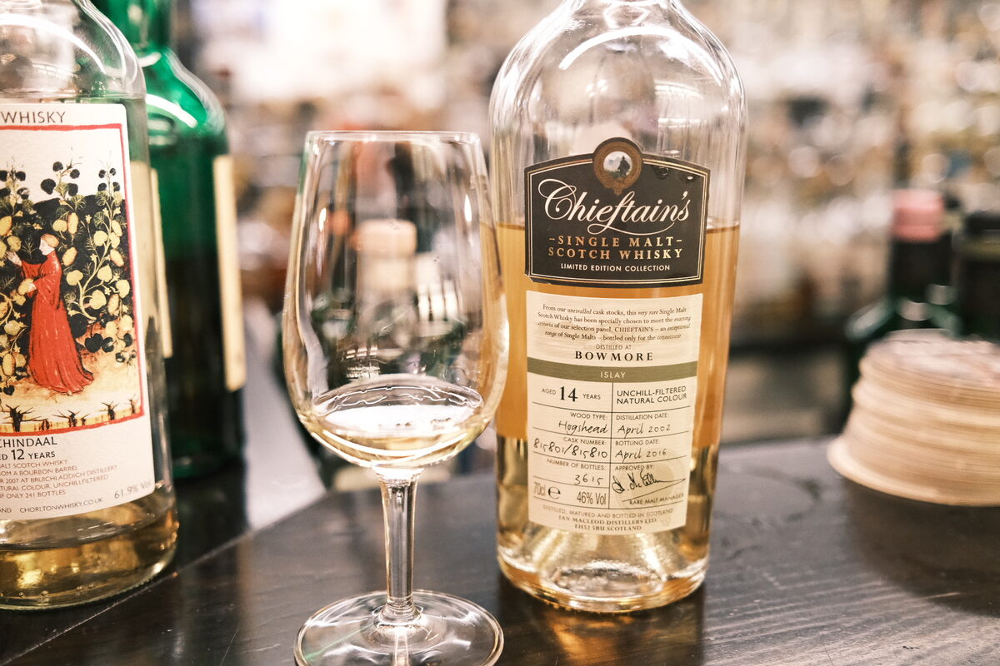

Bowmore 2002 Ian Macleod (Chieftain's) 14 years 46% (hogshead)
Unrelated, but fake handwriting typefaces are lame.
Colour Straw.
Nose Sandalwood, perfume, classic Bowmore. Rosemary and mint. Lemon juice, citrus peels, quite floral. Marzipan, hazelnuts
Palate Caramel and cream. Perfumed wood, incense. Herbaceous and grassy.Coriander, fennel. Slightly milky texture, but mostly watery. A touch of wax. A bit of yoghurt.
Finish Vanilla, incense, sandalwood, unripe berries. Airy and perfumed. Rosewater, pomegranate.
Comments Lovely and approachable Bowmore. Texture is a letdown. 85/100.

Posted by Dominic on 14 Jun 2021